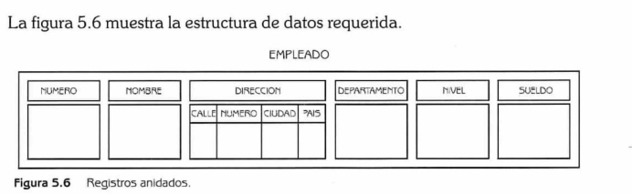

Descripción
Este ejemplo muestra cómo se pueden crear registros anidados en Java.
El registro EMPLEADO incluye un campo DIRECCIÓN,
que a su vez es un registro del tipo DOMICILIO compuesto por
calle, número, ciudad y país.
Figura de referencia

Código Java
public class Ejemplo5_6 {
static class Domicilio {
String calle;
int numero;
String ciudad;
String pais;
}
static class Empleado {
int numero;
String nombre;
Domicilio direccion;
String departamento;
int nivel;
double sueldo;
}
}
Resultado esperado
Salida:
Empleado #1
Nombre: Xavier Guerrero
Dirección: Av. Hidalgo #102, Pachuca, México
Departamento: TICs
Nivel: 2
Sueldo: $18500.75
Empleado #1
Nombre: Xavier Guerrero
Dirección: Av. Hidalgo #102, Pachuca, México
Departamento: TICs
Nivel: 2
Sueldo: $18500.75